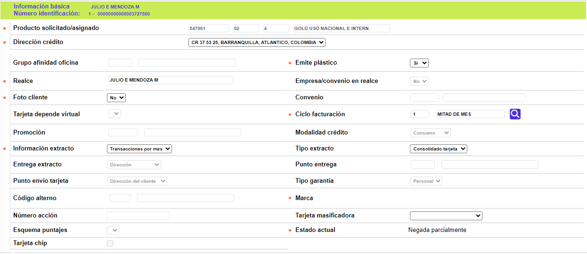
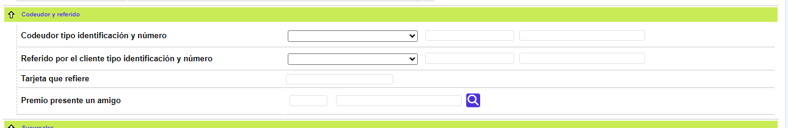
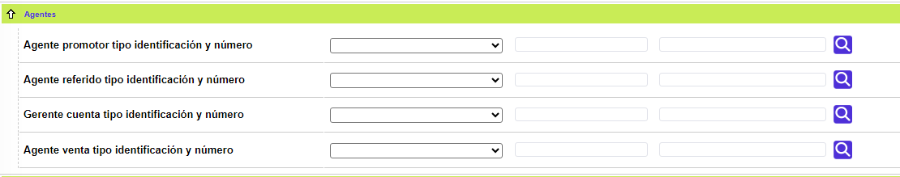

Ingreso de solicitudes Crédito nuevo - Titular
Cuando el usuario selecciona el crédito nuevo para Titular con adicionales, el sistema cuestiona si la solicitud ha sido negada previamente o no y enseguida se despliega un wizard de tres pasos. En el primero de ellos se ingresa toda la Información general del cliente. Los otros dos formularios son Líneas de crédito y Documentos, a los cuales se llega a través de los botones ubicados en la parte inferior del formulario.
Por otro lado, cuando es seleccionado el Crédito nuevo para Solo titular, el sistema mostrará el mismo formulario omitiendo los siguintes campos: Tipo de tarjeta adicional del bloque Información básica; y los campos del bloque Cupo global.
Los bloques y la información del primer paso del wizard son:
Información básica

Producto solicitado / asignado |
Muestra el producto seleccionado en el formulario anterior. |
Dirección Crédito |
Campo que despliega la nomenclatura de la dirección a la que el cliente desea le sea enviada la correspondencia relacionada con su obligación. |
Grupo afinidad oficina |
Campo que posee lista de valores poblada en el tab Grupos afinidad de la opción Definición Bines, de la que debe seleccionarse el grupo correspondiente que permite el otorgamiento de beneficios por la colocación de nuevos productos. |
Emite plástico |
Dependiendo de lo definido previamente para el producto y de acuerdo con el tipo de solicitud, en este campo se señala si debe o no generarse plástico. |
|
Realce |
Muestra por defecto cómo aparecerá en el plástico el nombre del cliente. Este campo es susceptible de ser modificado. |
Empresa/convenio en realce |
Campo que posee lista de valores mediante la cual se le indica al sistema si dentro del archivo de realce, y para las solicitudes que apliquen, se incluye o no el nombre de la empresa (tarjetas empresariales) o el nombre del convenio a través del que se expide la tarjeta. |
Foto cliente |
Campo que indica si la solicitud implica la inclusión o no de la fotografía del cliente en el plástico. |
Convenio |
Campo que muestra el código del convenio y su correspondiente descripción, si la tarjeta principal posee un determinado convenio. |
Tarjeta depende virtual |
Este campo aplica para aquellos productos que disponen de alternativas de uso virtual, como por ejemplo las tarjetas, y despliega el número de la tarjeta principal de la que depende. Para esto es necesario haber diligenciado previamente el campo Porcentaje Ppal para Tarj virtual contenido en la pestaña Créditos nuevos, del tab Eventos, en la opción Definición de producto. |
Ciclo facturación |
Campo que posee lista de valores poblada mediante la opción Ciclos de facturación del módulo de Cartera y Contabilidad, de la que se puede seleccionar el ciclo de cortes periódicos acorde con las políticas de la entidad o el que mejor se acomode a los flujos de caja del cliente. |
Promoción |
A través de una lista de valores poblada previamente en la opción Promociones para colocación, la entidad selecciona el mecanismo por el cual adquirió ese nuevo cliente, quien se hará acreedor de todos los incentivos de dicho programa. |
Modalidad crédito |
Campo que posee lista de valores adjunta de la que debe seleccionarse entre Comercial, Microcrédito o Consumo, la modalidad de crédito a la que corresponda la solicitud; la información de este campo es de gran importancia por sus implicaciones contables y en la calificación de la cartera. |
Información extracto |
Campo que ilustra la manera como serán presentados los movimientos del producto en los cortes periódicos, de acuerdo con lo definido previamente a nivel del producto. Este dato será inmodificable si ya se ha definido en la opción productos, de lo contrario se podrá modificar. |
Tipo extracto |
Campo de salida, que muestra el tipo de extracto asociado al producto. El dato desplegado es el que se define a nivel de producto, y no se permite su modificación. |
Entrega extracto |
Campo que posee lista de valores adjunta en la que es posible indicar el destino del reporte periódico de movimiento (extracto), para lo cual se dispone de Punto de entrega, Oficina (radicación) o Dirección (correspondencia). |
Punto de entrega |
Lista de valores que sólo se habilita si esta opción es seleccionada en el campo Entrega extracto. |
Punto envío tarjeta |
Campo que posee lista de valores adjunta en la que es posible indicar el destino del plástico del producto, para lo cual se dispone de Dirección del cliente, Agente de venta, Otra oficina, Oficina de radicación u Otra oficina. |
Tipo garantía |
Campo que posee lista de valores adjunta de la que debe seleccionarse entre Personal o Real según la clase de aval que respalda la obligación; al igual que la Modalidad crédito, impacta la parte contable y la calificación de la cartera. |
Código alterno |
Campo que contiene una lista de valores que permite escoger un código alterno que estará ubicado dentro del número de la tarjeta según la parametrización definida en la opción Parámetros número de tarjeta de tablas de la entidad financiera en El Núcleo. |
Marca |
Campo de salida que indica la Marca a la cual pertenece el producto solicitado para el Crédito nuevo. |
Número acción |
Campo que se activa si ha sido definido previamente para el producto, y permite registrar el número de acción de un club o similares. |
Tarjeta masificadora |
Campo que contiene una lista de valores para seleccionar un número de tarjeta, válido dentro del sistema y que pertenece al mismo cliente, a partir del cual o que sirve como base para el proceso de masificación de productos, dirigidos a clientes que ya posean algún producto con la entidad. |
Esquema puntajes |
Campo que posee lista de valores poblada por medio de la opción Esquemas de puntaje, de la que puede seleccionarse aquel dentro del cual el uso del producto reportará beneficios al cliente. |
Estado actual |
Campo que ilustra la condición en la que se encuentra la respectiva solicitud. |
Tipo tarjeta Adicional |
Campo que posee una lista de valores (se muestra para Titular con adicionales), que permite seleccionar entre Extendida, Adicional o Amparada; el tipo de tarjeta adicional para la que se desea crear el crédito nuevo . |
Codeudor y referido

Codeudor tipo identificación y número |
Campo en el que debe registrarse, si aplica, el tipo y número de documento de identificación correspondiente al avalista de la obligación, para lo que se requiere que previamente exista algún tipo de relación entre ambos clientes. |
Referido por el cliente tipo identificación y número |
Campo en el que debe registrarse, si aplica, el tipo y número de documento de identificación correspondiente al cliente de la entidad quien refiere al solicitante, información requerida para el otorgamiento de premios. |
Tarjeta que refiere |
Campo que posee lista de valores de la que debe seleccionarse, si aplica, el número del producto asociado al cliente que refiere al solicitante de la presente. |
Premio presente amigo |
Campo que posee lista de valores poblada a través de la opción Premios puntaje del módulo de Lealtad, lo que permite determinar el tipo o clase de retribución a la cual se hace acreedor el cliente que presenta nuevos clientes a quienes les sean asignados nuevos créditos. |
Sucursales
Sucursal radicación |
Campo que posee lista de valores poblada por medio de la opción Estructura orgánica, de la que debe seleccionarse la oficina que corresponda con la ubicación actual del cliente. |
Oficina venta |
Campo que posee lista de valores poblada a través de la opción Estructura orgánica, de la que debe seleccionarse la oficina mediante la que se materializó la venta del producto. |
Oficina envío |
Campo que posee lista de valores poblada mediante de la opción Estructura orgánica, de la que debe seleccionarse el código de la oficina a la que debe canalizarse el envío de los productos. |
Información CDT
Oficina C.D.T. |
Campo que posee lista de valores poblada por medio de la opción de Estructura orgánica, de la que debe seleccionarse si es el caso, el código de la oficina en la que se constituye el C.D.T. que sirve como garantía para los clientes solicitantes de tarjeta garantizada. |
Fecha apertura C.D.T. |
Campo en formato YYYY-MM-DD que contiene, cuando aplica, la fecha en que el C.D.T. fue aperturado. |
Monto C.D.T. |
Campo en el que se debe registrar, si aplica, el monto o valor inicial del C.D.T. aperturado como garantía del crédito solicitado. |
Plazo C.D.T. |
Si aplica, debe contener el plazo inicial de vigencia del C.D.T. aperturado como garantía del crédito solicitado. |
Número C.D.T. |
Si aplica, debe contener el número del C.D.T. aperturado como garantía del crédito solicitado. |
Fecha vence C.D.T. |
Si aplica, debe contener en formato YYYY-MM-DD la fecha en que vence el C.D.T. aperturado. |
Agentes

Agente promotor tipo identificaión y número |
Permite el ingreso del tipo y número del documento de identidad del colaborador que realizó las gestiones comerciales y operativas tendientes a la materialización de la venta del producto, el cual debe haberse registrado previamente en la opción Funcionarios de las tablas de la entidad financiera del módulo Núcleo. |
Agente referido tipo identificaión y número |
Permite el ingreso del tipo y número del documento de identidad del colaborador que realizó gestiones complementarias y operativas, adicionales a las efectuadas por el agente promotor, tendientes a la materialización de la venta del producto, el cual debe haberse registrado previamente en la opción Funcionarios. |
Gerente cuenta tipo identificaión y número |
Permite el ingreso del tipo y número del documento de identidad del colaborador que en algunas entidades, corresponde al ejecutivo a quien se le asigna la administración de producto; los empleados que detenten ese perfil deben ser definidos previamente en la opción Funcionarios de las tablas de la entidad financiera del módulo Núcleo. |
Agente venta tipo identificaión y número |
Permite el ingreso del tipo y número del documento de identidad del colaborador que realizó las gestiones comerciales y operativas tendientes a la materialización de la venta del producto, el cual debe haberse registrado previamente en la opción Funcionarios. |
Cuentas

Tipo cuenta a debitar |
En el evento en que el cliente desee que los pagos de su producto se hagan a través de un débito automático, en este campo se define a través de que clase de cuenta se realizará éste. |
Sucursal cuenta |
Campo que permite registrar el código de la sucursal donde el Número cuenta pertenece. |
Cuenta a debitar |
En este campo se registra el número de la cuenta sobre la cual se efectuará el débito automático. |
Tipo débito |
Se determina cómo se realizará el débito automático, es decir si del monto a debitar por determinada obligación corresponde a Pago total (saldo de la deuda) o Parcial (pago mínimo). |
Moneda cuenta debitar |
Corresponde a la clase de moneda en la cual está expresada la cuenta sobre la cual se realizará el débito automático. A través de la lista de valores poblada previamente en la opción Monedas de la tablas corporativas del módulo Núcleo, es posible realizar la selección. |
Tipo cuenta desembolso |
Este campo aplica y es obligatorio para aquellos créditos asociados a productos en los que en la opción Eventos – Nuevos créditos se haya activado el campo Producto con desembolsos, caso en el que se requiere disponer de una cuenta corriente o de ahorro donde se puedan efecutar los respectivos desembolsos. |
Número cuenta desembolso |
Contiene el número de la cuenta corriente o de ahorro a afectar con los desembolsos parciales. |
Productos con entidad |
Campo inicialmente de carácter informativo, que aplica y es obligatorio para el producto Crediagil, siempre y cuando deba surtirse la etapa de asignación de cupos, permitiendo seleccionar entre las posibles combinatorias de los productos genéricos que posea el cliente, por ejemplo Crédito de consumo, Tarjeta y Crédito hipotecario, o Sin productos. |
Cupo global
Cupo global solicitado |
Campo que se despliega sólo si la solicitud es del tipo Titular con adicionales y registra el valor del cupo global solicitado el que será distribuido entre el titular y la(s) adicional(es). |
Cupo global asignado |
Al igual que el anterior sólo se despliega si la solicitud es del tipo Titular con adicionales; este campo se diligencia al surtirse la etapa de asignación de cupos dependiendo de si dicha labor se realiza de forma manual o automática; en el primer caso debe alimentarse al momento de la asignación del cupo con el monto global efectivamente aprobado, en el otro caso, aparece el valor del cupo global acorde con la parametrización y validaciones efectuadas sobre la solicitud. |
Motivos de negación
Motivo negación |
Si corresponde a una solicitud inicialmente negada debe ingresarse el motivo por el cual fue denegada la solicitud; en otro caso, despliega la causal de negación determinada en el proceso de las etapas correspondientes. |
Observaciones negación |
Campo que permite ingresar notas relacionadas con el motivo de negación o despliega a manera de histórico las otras causales de negación que se dieron en etapas que permitían pasar a la siguiente etapa. |
Observaciones
Observaciones |
Campo alfanumérico en el que es posible registrar notas relevantes que puedan servir como criterios adicionales al momento de evaluar el cupo a asignar. |
El formulario cuenta con botones en la parte inferior derecha que le permiten al usuario Cancelar, para volver al formulario inicial del ingreso de solicitudes de crédito nuevo, y Avanzar al siguiente paso del wizard.
Líneas de crédito |Documentos | Consultar etapas|Ingreso de Adicionales